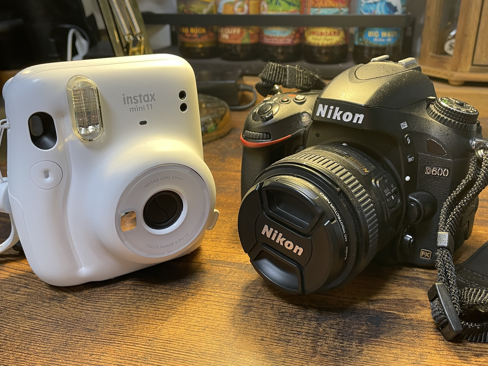
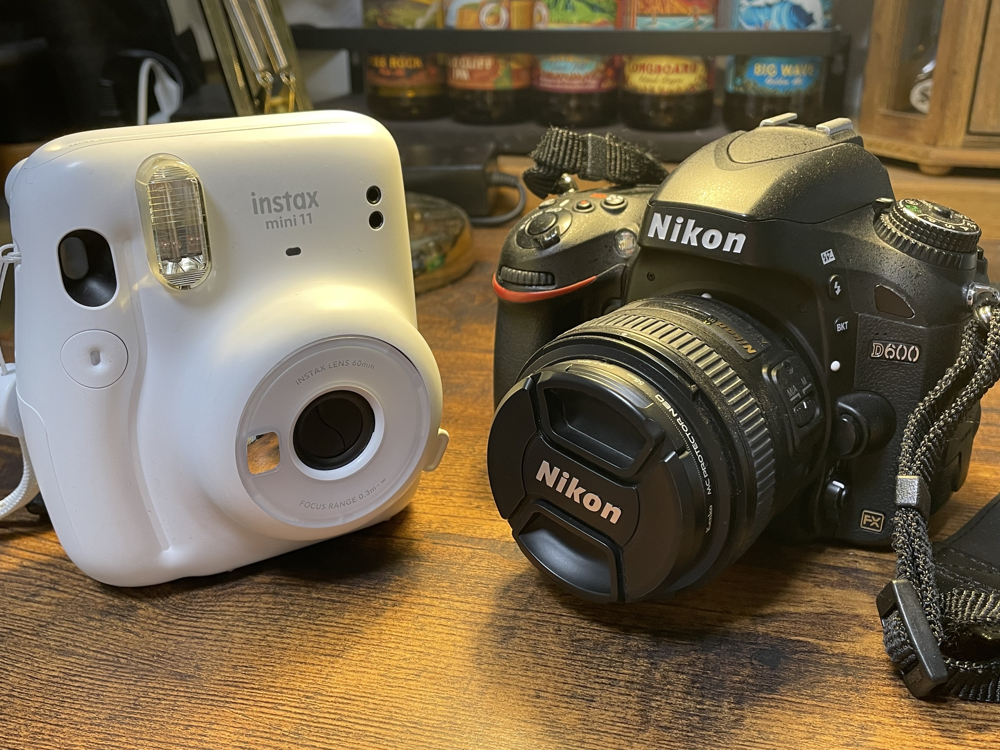
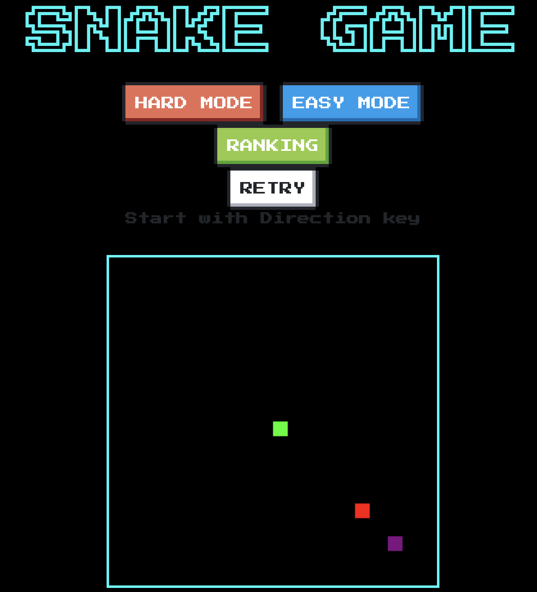
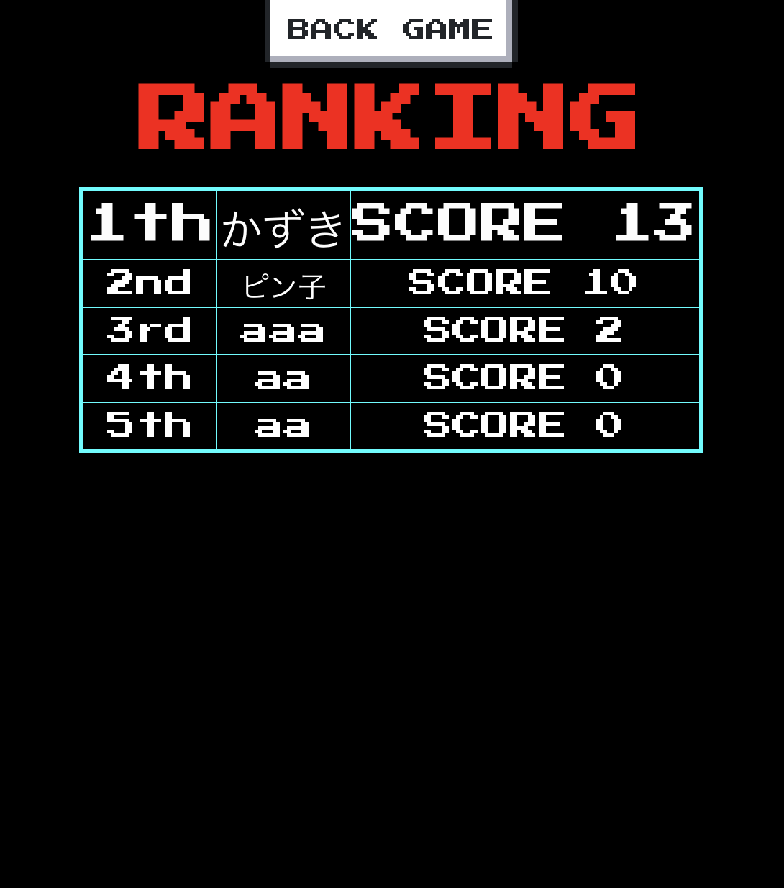

プロフィール
氏名：吉島開人
ふりがな：よしじま かいと
生年月日：2000年 5月 30日 （満21歳）
ふりがな：かながわけんよこはましかながわくすげたちょう
現住所： 〒221-0864 神奈川県横浜市神奈川区菅田町1638-18 ベルクレストH-2
TEL (045) 472 - 5773 / 携帯電話 (080) 5429 - 3768
Email：198478@st.takushoku-u.ac.jp
学歴
2019年 3月 神奈川県立岸根高等学校 卒業
2019年 4月 拓殖大学工学部 情報工学科 入学
2023年 3月 拓殖大学工学部 情報工学科 卒業予定
以上
(写真は、ラグビーワールドカップの際に打ち解けたニュージーランドの方と撮ったものです)
I love
私のことを理解して頂けるよう、私の愛してやまないもの紹介します。
-横にスクロールで表示-
1/4
MOTORCYCLE

大学一年生の夏に、Harley-Davidson社のXG750Aというバイクを10年ローンで購入しました。
シーズン中には月に一度ツーリングを主催しており、仲間たちと楽しいバイクライフを送っています。
2/4
PHOTO
 
風景や物を写真に収めることが好きです。
左は京都で撮ったもので、機種はNikonのD600という物を使用しています。
数ヶ月前にチェキも購入し、さまざまな方法で写真を楽しんでいます。
3/4
DISNEY
東京ディズニーリゾートが大好きで、年に数回は訪れます。
非日常的で簡単に旅行気分を味わえるところが大変気に入っています。
4/4
THE BLUE HEARTS
小学5年生で「TRAIN-TRAIN」を聞いて以来、ブルーハーツの大ファンになりました。
免許を取り「夜の盗賊団」を聞いてドライブをするという夢が叶った時には、涙が出そうなほど嬉しかったです。
プログラミングの経験
Java
私の大学では、プログラミングの初学習としてJavaを扱います。
基礎学習から簡単なアプリケーションの開発など、さまざまな用途で使用しました。
現在は、Java Silver取得に向けて勉強中です。
Python
Pythonでは、データベースやフレームワークを活用した統計解析を行いました。
現在は授業含めほとんど扱うことがないので、自信がありません。
JavaScript
最も得意とする言語です。簡単なゲームやシステムならば一人で開発することができます。
後述するポートフォリオでも、JavaScriptを使用したゲームを掲載しています。
作品紹介
ここでは、私が得意とするフロントエンドの技術を一つのゲームにしたものを紹介いたします。
作品名は「Snake Game」。有名なゲームであるスネークゲームを参考に、アレンジしてみました。開発に使用した言語はhtml,css,JavaScriptです。
内容は大きく分けると2つで、蛇を操作するゲーム本体とニフクラというクラウドサービスを使用したランキング機能の２つになっています。
NES.cssとPress Start 2Pというフォントを使用することで、懐かしみのあるレトロな雰囲気を持たせています。


下のSnakeGameをタップすることで、ゲームを開始できます。
SNAKEGAME
エンジニアとしての夢
私の夢は、LINEやAmazonなどと肩を並べるようなアプリケーションを開発することです。
世の中になくてはならないモノを作り、人々の生活や体験をより良く便利にしていきたいと考えています。
ですが、ただ作るだけでは意味がありません。いくら良いシステムでも、使っていただけるユーザーが居なければ本来の目的は達成できません。
同じワインでも、注ぎ方やグラス・合わせる料理や店の雰囲気などで味が変わるように、提供の仕方は結果を作用する最も大きな要素です。
提供の仕方を工夫していくフロントエンドの作業こそ、ユーザーの集客や満足度上昇に直結する一番重要な作業だと考えています。
そして何よりも、自分の描いたコードが見た目として現れるフロントエンドは、物を作る楽しさを直で感じることが出来るので大好きです。
よって私は、フロントエンドエンジニアとして活躍し、夢を実現したいと考えています。
さいごに
まずは、
初めてのポートフォリオ作成で何を書いていいのかわからず、京野菜のカードゲームを例として見せていただいた時は
と絶望してしまいした。
ですが、いざ作業をするとアイデアがたくさん出てきて作業に没頭してしまい、選考を忘れてすっかり楽しんでしまいました！
今回の履歴書・ポートフォリオ作成ですが、私としましては勉強になったことも多く、作品も愛着のある良いものに仕上がったと考えています。
反省点は多々ありますが、気に入っていただけると嬉しいです！
改めまして、最後までご覧いただきありがとうございました！